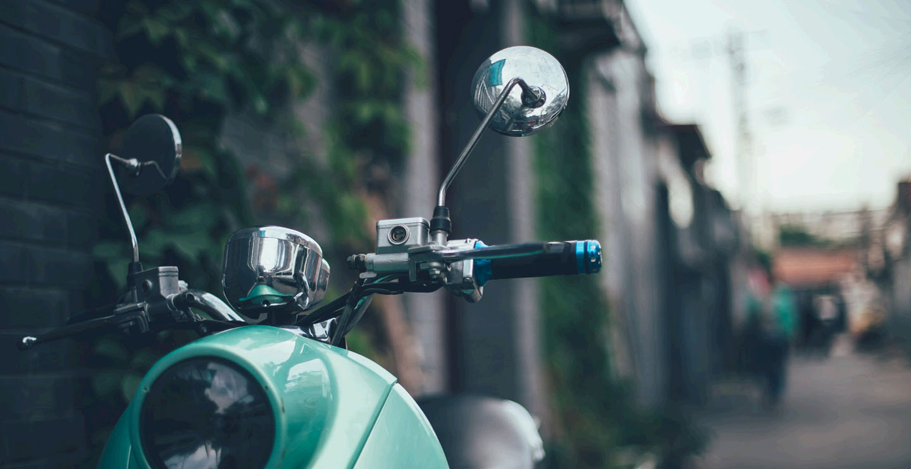
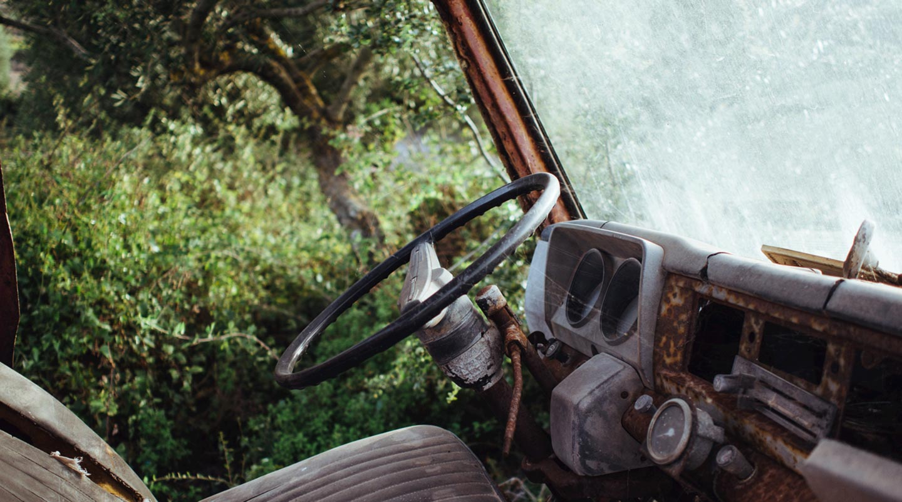

Aprendizaje
Crear conocimiento
Aprender no sucede de golpe: se construye con preguntas, práctica y la voluntad de volver a intentarlo.
Ideas, aprendizaje y vida cotidiana
Estudiante y aprendiz constante. En este cuaderno comparto lo que voy descubriendo sobre tecnología, creatividad y las pequeñas pausas que inspiran nuevas ideas.

Un gusto tenerte por aquí.

Notas recientes
Reflexiones personales sobre aprender, crear y mirar el mundo con curiosidad.
Aprender no sucede de golpe: se construye con preguntas, práctica y la voluntad de volver a intentarlo.
Una pausa bajo el cielo nocturno me recordó que también necesitamos silencio para ordenar lo que pensamos.

Una mesa despejada no resuelve todo, pero puede ser el primer paso para dar forma a una idea nueva.
Compartir un primer proyecto también significa compartir los errores, las preguntas y todo lo aprendido al resolverlos.
“Prestar atención es la forma más sencilla de estar presente.”
Un poco de contexto
Soy Jesús Francisco Barreras Samaniego. Me gusta aprender haciendo, compartir mis avances y encontrar inspiración en las experiencias cotidianas.
code Desarrollo web, diseño de interfaces y herramientas digitales para aprender.
auto_stories Leer, explorar ideas nuevas y documentar el proceso creativo.
Quiero seguir construyendo proyectos útiles, fortalecer mis fundamentos de programación y crear experiencias web accesibles que ayuden a otras personas a aprender y expresarse.
Hablemos
¿Tienes una idea, una pregunta o una recomendación? Escríbeme.
alternate_email También puedes escribirme a JesusBar@gmail.com